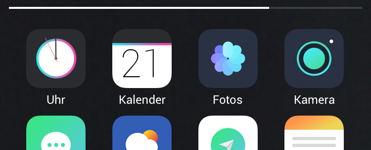
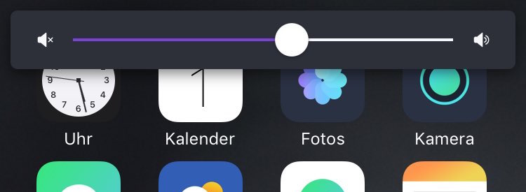
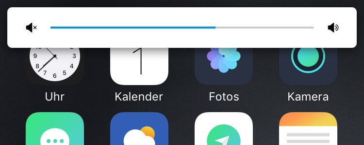
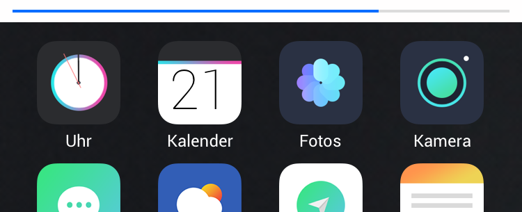
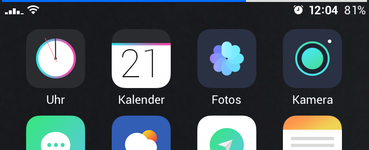
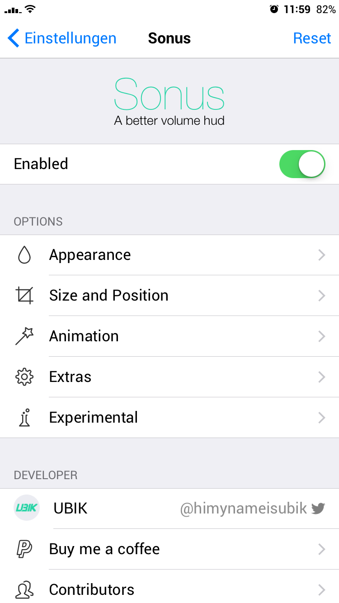

-
Now fully supports iOS 10!
A better volume hud replacement. Highly customizable and free!
Works with iPhones and iPads.
-
Instead of making the tweak cost money you can support me by buying me a coffee. With that coffee I am able to stay up late, continue working on the tweak and fixing bugs. To do so either click on the link below the images or click on "Buy me a coffee" in the settings.
- 
- 
- 
- 
- 
- 
Developer
- Follow me on Twitter
-
Buy me a coffee (PayPal)
If the link does not work: https://www.paypal.com/cgi-bin/webscr?cmd=_s-xclick&hosted_button_id=HGK79XZM386YU
Changelog
-
2.0.0-1+debug
- Full iOS 10 support
- Re-organized settings
- Removed libobjcipc (dynamic colors disabled for now)
- Added settings to add a corner radius to the overlay
- Added settings to add a drop shadow to the overlay
- Added settings to add a margin to the overlay
- Added settings to change the animation (fade and/or slide)
-
1.1.2-2+debug
- Fixed a bug where Sonus would show when invoking a brightness change via Activator
-
1.1.2-1+debug
- Re-organized settings
- Added settings to show gradient background only on landscape mode
- Added settings to adjust both gradient colors
- Added experimental settings to adjust the handle/thumb image from the slider (color, size & style)
- Added experimental settings to have a gradient colored slider
-
1.1.1-3+debug
- Adjusted more stuff of the creation of the HUD in hope of fixing safe mode crashes
-
1.1.1-2+debug
- Adjusted creation of HUD to see if it fixes safe mode crashes for some users
-
1.1.1-1+debug
- Added a shitload of logging for bug fixing
-
1.1.0-4
- Added toggle for lock screen
- Added themes
- Fixed a bug where a dark gradient would show with the first time activating
-
1.1.0-3
- Fixed a safe mode crash the NC status bar was hidden by another tweak
-
1.1.0-2
- Fixed mirrored min and max indicator images for RTL
-
1.1.0-1
- Added animation duration for fluid volume
- Added slider handle
- Added indicator for ringer volume
- Added reset to defaults button
- Added tap to dismiss
- Now showing HUD on lock screen
- Mirrored min and max indicator images for RTL
- Reorganized settings
- Fixed an issue where the status bar in notification center was not hidden
- Fixed stock HUD glitch when Sonus is disabled
-
1.0.0-8
- Added fluid animation of volume change
- Added ability to adjust media volume with slider (hard to do on small sliders)
- Fixed status bar not hidden on call screen
- Fixed crash while FaceTime
-
1.0.0-7
- Fixed portrait upside down rotation & scaling
- Fixed blur view being on top of slider
- Added some info texts in settings
-
1.0.0-6
- Fixed landscape bug on Springboard with iPads and iPhone Plus devices
-
1.0.0-5
- Fixed status bar staying hidden when changing application
-
1.0.0-4
- Optimized tweak size (From 68 to 53KB)
- Fixed random text showing up
- Added gradient overlay
- Added animation when rotating
- Removed border option which added unneeded glitches
-
1.0.0-3
- Fixed another rotation issue
- Re-wrote the resizing of Sonus after/while rotation of a device (should fix different rotation/orientation bugs)
-
1.0.0-2
- Fixed a crash when rotating device while Sonus was showing
- Fixed an issue where Sonus wouldn't resize properly
-
1.0.0-1
- Added dynamic colors
- Added ability to hide the statusbar
- Added blur background
- Added indicators for media volume
- Customizable border width
- Custom position and padding for landscape
- Initial display animation looking weird
- Fuzzy borders
- Settings crashes minimized
-
0.0.1-1
- First public release
Known Issues/Todo
-
- Fix stock HUD glitch when Sonus is disabled
- Add indicator for ringer volume
- Add reset to defaults
- Add profiles/themes
- Add animation duration for fluid volume
- Add slider thumb image
- Mirror min/max indicator images for RTL
- Hide status bar in notification center
- Show HUD on lock screen